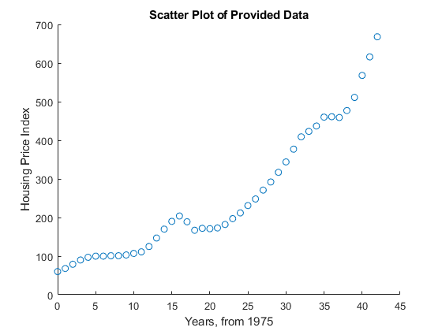
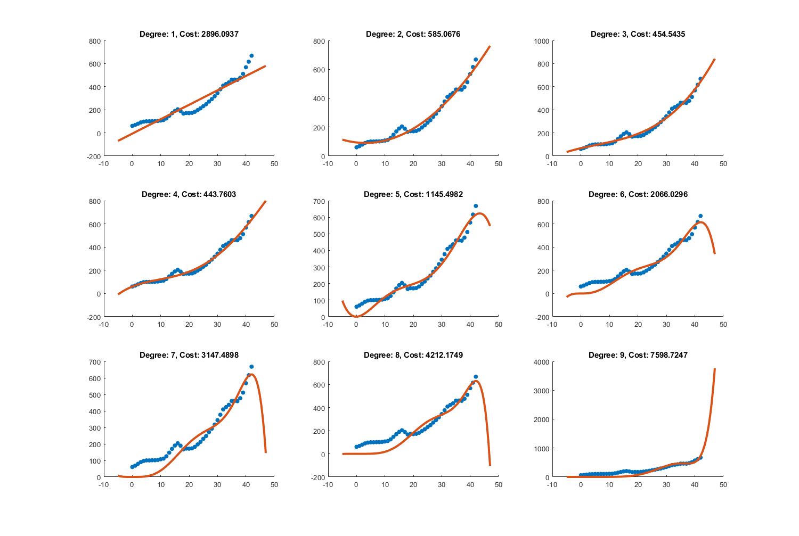

Exercise 3: Polynomial Regression
Submitted By: Prasannjeet Singh
Contents
Q1. Plotting the data:
hFig = figure(1); load Data/housing_price_index.mat; scatter(housing_price_index(:,1), housing_price_index(:,2)); title('Scatter Plot of Provided Data'); xlabel('Years, from 1975'); ylabel('Housing Price Index'); snapnow; close(hFig);
Q2. Plotting different polynomial regressions
features = housing_price_index(:,1); xMin = min(features); xMax = max(features); x = linspace(xMin-5, xMax+5, 100); [sampleSets, ~] = size(features); y = housing_price_index(:,2); beta = ones(9,10); hFig = figure(2); set(hFig, 'Position', [0 0 1500 1500]); for i = 1:9 clearvars tempFeatures; tempFeatures = repmat(features,1,i); for j = 1:i tempFeatures(:,j) = tempFeatures(:,j) .^ j; end beta(i,1:i+1) = ExTwoFunctions.normalEquation(tempFeatures, y); subplot(3,3,i); scatter(features,y,'filled'); hold on; clearvars yM; yM = repmat(x,i+1,1); for k = 0:i yM(k+1,:) = yM(k+1,:) .^ k; end beetah = repmat(beta(i,1:i+1)', 1, 100); yM = yM .* beetah; yM = sum(yM); plot(x, yM,'linewidth',3); title(strcat('Degree:',32,int2str(i),',',32,'Cost:',32, num2str(ExTwoFunctions.polyCost(features, y, beta(i,1:i+1),i)))); end snapnow; close(hFig);
The Best Fit
By just looking at the above graph plots, we can estimate that the polynomial with degree 2, 3 and 4 seem to be more fitting than the rest. However, to get a more clearer idea, I implemented the function polyCost(), which calculates Mean-Squared-Error for each degree. The cost is displayed above each graphs, and as it turns out, the polynomial with degree 4 seems to be the best fitting. Therefore, I think this model (degree-4) should be the one that gives the best fit.
Q3. Cost Prediction
We will predict the cost of house with polynomial regression of degree 4. For the year 2022, the categorical year value will be: 2022 - 1975 = 47
betaCost = beta(4,1:5); year = [1; 47; 47^2; 47^3; 47^4]; costIndex = betaCost * year
costIndex = 799.3364
Threfore, the housing price index for the year 2022 is 799.33.
If we check the provided data, we find that for the year 2015 (i.e. 2015-1975 = 40), the price index was 568, and the cost in which Jonas bought the house was 2.3 million SEK. Assuming the index-price relation to be linear (unitary), the factor comes out to be:
factor = 2.3/568;
Therefore, the price of the house in 2022 will be:
price2022 = factor * costIndex
price2022 =
3.2367
Hence, the expected price that Jonas can get for his house in 2022, according to the selected model, is approximately 3.2 Million SEK.
More precisely, it is 3,236,700.00 SEK.